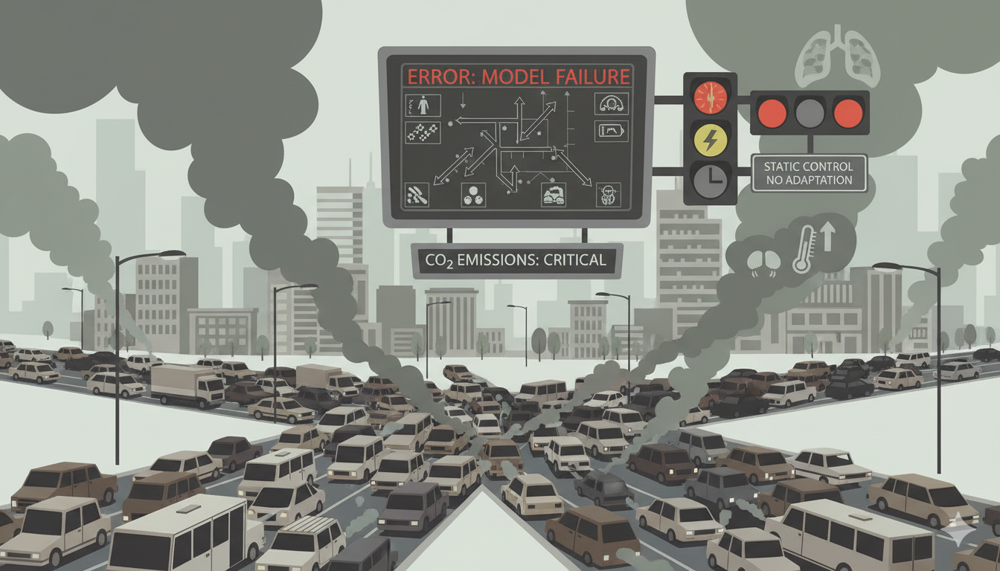

1
Outdated models fail to capture real-world dynamics
2
Static signal control unable to adapt to traffic demand
3
Environmental impact from congestion and excessive emissions
Traffic Congestion
High
Fuel Consumption
Excessive